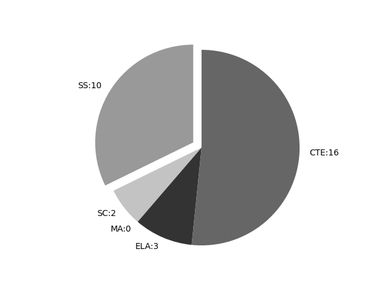

Kansas
Report date: 2021-07-08
The frequency of all keywords found in this state's standards: 32
Comparable state score: 0.133 (median: .303, SD: .324)
The frequency above is the sum of all keywords found in all of this state's four core academic standards and the state's CTE/career standards. This total count is broken down by keyword and discipline area below.
On this site, 'comparable scores' are calculated as: keywords found divided by total words in the standards document(s) - multiplied by 100,000. The comparable scores attempt to normalize data, accounting for very different sizes of curriculum guidance documentation.
Frequencies by keyword or phrase:- spatial: 20
- geographic information system: 2
- geospatial: 5
- GIS: 5

Frequencies by discipline area: - SS: 10 (Comparable score: 0.572)
- SC: 2 (Comparable score: 0.073)
- MA: 0 (Comparable score: None)
- ELA: 3 (Comparable score: 0.066)
- CTE: 17 (Comparable score: 0.113)
Review the standards document(s) used in this machine search: external link
Examples of keyword use by discipline area (and document): - CTE
- 2018-2019 AV Communication Pathway Design Sheet.pdf, page:14, position:1953
outlets (e.g. forums, newsgroups, social networking, blogs, micro-blogs. Second Life, mailing lists, electronic publications). 1.2.15 Identify uses of geospatial data (e.g. geospatial tagging of photo - 17-18 BioChem DESIGN &.pdf, page:6, position:3465
3 2 1 0 15. Measure using both the English and Metric systems. 3 2 1 0 16. Summarize the reasoning for using sketching as a communication tool. 3 2 1 0 17. Use visualization, spatial reasoning, and geometric shapes to sketch two an - 17-18 EngApp Math Design &.pdf, page:4, position:3772
3 2 1 0 15. Measure using both the English and Metric systems. 3 2 1 0 16. Summarize the reasoning for using sketching as a communication tool. 3 2 1 0 17. Use visualization, spatial reasoning, and geometric shapes to sketch two a - 17-18 CartGeoSpat DESIGN &.pdf, page:0, position:170
- 17-18 CartGeoSpat DESIGN &.pdf, page:0, position:48
- 17-18 CartGeoSpat DESIGN &.pdf, page:0, position:273
Pathway CIP Code 15.1102Meteorology 03006 1 credit Animation 10210 1 credit GIS Technology 21058 1 credit Robotics 21009 1 credit Aerospace Technology 21055 1 credit GIS Spatial Applications 21112 1 credit Emerging Technolog - 17-18 CartGeoSpat DESIGN &.pdf, page:4, position:3714
3 2 1 0 15. Measure using both the English and Metric systems. 3 2 1 0 16. Summarize the reasoning for using sketching as a communication tool. 3 2 1 0 17. Use visualization, spatial reasoning, and geometric shapes to sketch two a - 17-18 CartGeoSpat DESIGN &.pdf, page:16, position:916
and as a result, can change the way the atmosphere regulates the heat coming from solar radiation. 21058 GIS Technology 3 2 1 0 1. Identify and describe careers in Geospatial and Geographic Information Systems. 3 - 17-18 CartGeoSpat DESIGN &.pdf, page:17, position:181
- 17-18 CartGeoSpat DESIGN &.pdf, page:17, position:186
- 17-18 CartGeoSpat DESIGN &.pdf, page:18, position:2741
3 2 1 0 1. Understanding Mapping a. Discuss the history and societal implications of mapping, GIS, and remote sensing. b. Identify industry applications for GIS technology. c. Compare and contrast v - 17-18 CartGeoSpat DESIGN &.pdf, page:18, position:2521
specifications. 3 2 1 0 21. Record test procedures and results, numerical and graphical data, and recommendations for changes in product APPLICATION LEVEL COURSES 21112 GIS Spatial Applications 3 2 1 0 1. Understanding Mappi - 17-18 CartGeoSpat DESIGN &.pdf, page:19, position:1271
frames. p. Create graphs and reports from data. 3 2 1 0 3. Demonstrate how to analyze land use, population, and flood zone data. 3 2 1 0 4. Create geospatial data. 3 2 1 0 5. Create a geodatabase - 17-18 CartGeoSpat DESIGN &.pdf, page:19, position:137
- 17-18 BioMedical DESIGN &.pdf, page:7, position:1271
contexts. 3 2 1 0 15. Measure using both the English and Metric systems. 3 2 1 0 16. Summarize the reasoning for using sketching as a communication tool. 3 2 1 0 17. Use visualization, spatial reasoning, and geometric shapes to sketch two a - 2018-2019 Web and Digital Communications Pathway Design Sheet rev012918.pdf, page:9, position:1955
0 19. Use available reference tools as appropriate. 10210 Animation This course emphasizes the development of digitally generated andor computer-enhanced media, including 2D and 3D spatial elements, graphic representation, management of - 17-18 Computer ScieneEng Design &.pdf, page:2, position:684
3 2 1 0 15. Measure using both the English and Metric systems. 3 2 1 0 16. Summarize the reasoning for using sketching as a communication tool. 3 2 1 0 17. Use visualization, spatial reasoning, and geometric shapes to sketch two a
- ELA
- 2017 K-12 English Language Arts Standards.pdf, page:173, position:2942
compound, and complex sentences. SL.3.8 Acquire and use accurately grade-appropriate conversational, general academic, and domain-specific words and phrases, including those that signal spatial and temporal relationships. - 2017 K-12 English Language Arts Standards.pdf, page:196, position:311
Grade 3 Speaking and Listening SL.3.8 Acquire and use accurately grade-appropriate conversational, general academic, and domain-specific words and phrases, including those that signal spatial and temporal relationships. To address this sta - 2017 K-12 English Language Arts Standards.pdf, page:253, position:1035
Across Grades SL.3.8 SL.4.8 SL.5.8 Acquire and use accurately grade-appropriate conversational, general academic, and domain-specific words and phrases, including those that signal spatial and temporal relationships. Acquire and use
- SC
- K-12 DCIs Combined 6.11.13.pdf, page:69, position:785
Assessment does not include the identification and naming of minerals.] MS-ESS2-2. Construct an explanation based on evidence for how geoscience processes have changed at varying time and spatial scales. [Clarification Statement: large (suc - K-12 DCIs Combined 6.11.13.pdf, page:98, position:458
reprinted with permission from the National Academy of Sciences. HS-ESS2 Students who demonstrate understanding can: HS-ESS2-1. Develop a model to illustrate operate at different spatial and temporal scales to form continental and o
- SS
- Kansas History, Government, and Social Studies Standards.pdf, page:100, position:718
of sources. analyzes and interprets economic information. draws conclusions and answers economic questions. Geography The student: asks geographic questions about spatial distributions, place, location scale and perspec - Kansas History, Government, and Social Studies Standards.pdf, page:112, position:1029
resources, as well as those discovered by students. Sample Resources: National Geographic Education, On-line map resources, On-line virtual reality (VR) resources, geographic information system (GIS), Royal Geographic Society (UK) Inte - Kansas History, Government, and Social Studies Standards.pdf, page:112, position:1059
as well as those discovered by students. Sample Resources: National Geographic Education, On-line map resources, On-line virtual reality (VR) resources, geographic information system (GIS), Royal Geographic Society (UK) Integrate - Kansas History, Government, and Social Studies Standards.pdf, page:113, position:236
STUDIES STANDARDS Kansas State Department of Education | www.ksde.org 113 Middle-Level Competencies Geography The student: asks geographic questions about spatial distributions, place, location scale and perspec - Kansas History, Government, and Social Studies Standards.pdf, page:127, position:864
of sources. analyzes and interprets economic information. draws conclusions and answers economic questions. Geography The student: asks geographic questions about spatial distributions, place, location scale and perspec - Kansas History, Government, and Social Studies Standards.pdf, page:193, position:1209
organizes, categorizes, and analyzes a variety of geographic information including text, maps, charts, graphs, and digital media. uses technology to create maps and displays of spatial, cultural, political, and physical characteri - Kansas History, Government, and Social Studies Standards.pdf, page:216, position:1032
Students should be introduced to existing and emerging technologies in geography. Students should be able to analyze the major geographic regions of the world using knowledge about geographic spatial terms, physical systems, human systems, and unde - Kansas History, Government, and Social Studies Standards.pdf, page:216, position:1891
river systems, ecosystems, plains, plateaus, deserts, valley, glacier, strait, peninsula, hills Technology: satellite mapping, dynamic mapping systems, global positioning systems (GPS), geographic information systems (GIS) Latin America (Mexico, Central - Kansas History, Government, and Social Studies Standards.pdf, page:216, position:1924
plateaus, deserts, valley, glacier, strait, peninsula, hills Technology: satellite mapping, dynamic mapping systems, global positioning systems (GPS), geographic information systems (GIS) Latin America (Mexico, Central America - Kansas History, Government, and Social Studies Standards.pdf, page:224, position:324
organizes, categorizes and analyzes a variety of geographic information including text, maps, charts, graphs, and digital media. uses technology to create maps and displays of spatial, cultural, political and physical characteristic